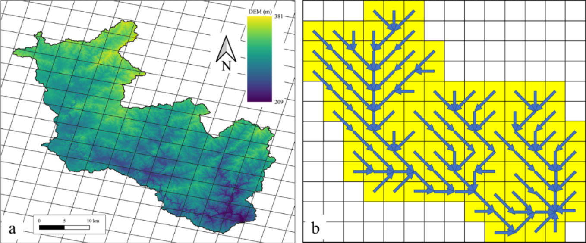
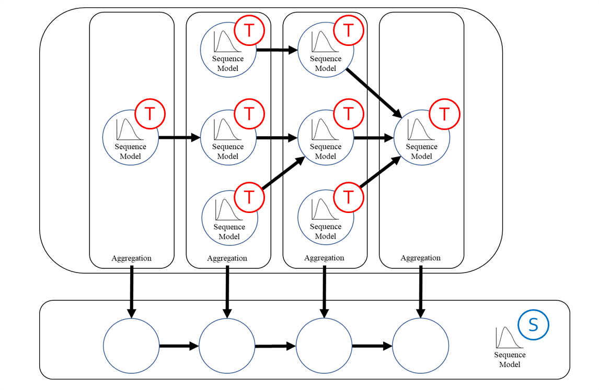

Time-series modeling has shown great promise in recent studies using the latest deep learning algorithms such as LSTM (Long Short-Term Memory). These studies primarily focused on watershed-scale rainfall-runoff modeling or streamflow forecasting, but the majority of them only considered a single watershed as a unit. Although this simplification is very effective, it does not take into account spatial information, which could result in significant errors in large watersheds. Several studies investigated the use of GNN (Graph Neural Networks) for data integration by decomposing a large watershed into multiple sub-watersheds, but each sub-watershed is still treated as a whole, and the geoinformation contained within the watershed is not fully utilized. In this paper, we propose the GNRRM (Graph Neural Rainfall-Runoff Model), a novel deep learning model that makes full use of spatial information from high-resolution precipitation data, including flow direction and geographic information.
When compared to baseline models, GNRRM has less over-fitting and significantly improves model performance. Our findings support the importance of hydrological data in deep learning-based rainfall-runoff modeling, and we encourage researchers to include more domain knowledge in their models.
Related Articles
- Xiang, Z., & Demir, I. (2021). High-resolution rainfall-runoff modeling using graph neural network. arXiv preprint arXiv:2110.10833.(Link: https://arxiv.org/abs/2110.10833)

Converting a watershed over 1000 km2 into a unidirectional graph using d8 algorithm.

GNRRM model structure on the example watershed. The calculation starts from the temporal sequence model for the rainfall-runoff simulation on each land. After appropriate aggregation, the spatial sequence model is used for the spatial level modeling.